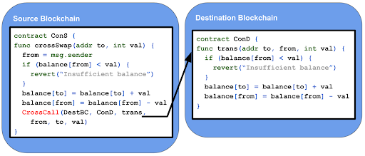

In this section, we're going to discuss about why blockchain networks might want to communicate to each other and how that occurs. We mentioned way back in the "Blockchain Fundamentals: Network Configurations" section about the compatibility of certain blockchains and how they might link together. We're going to spend this lesson discussing this in more detail
From Peter Robinson:
[T]here is no one blockchain to rule them all. There are public permissionless blockchains such as Ethereum Mainnet, Bitcoin, and Filecoin. There are many instances of permissioned, consortium blockchains such as Enterprise Ethereum / Quorum, Corda and Hyperledger Fabric. Within the public permissionless Ethereum space, Sidechains and Roll-ups (L2s) are emerging to improve scalability. All of these technologies need Crosschain Communications to allow them to communicate. Even if the world settled on one blockchain technology platform, all data and all functionality is unlikely to reside on just one instance of the blockchain platform.
Crosschain communications allows data (state) and functionality (execution) that resides on one blockchain to be accessible from another blockchain.
The seeds of crosschain communication can be found in the Bitcoin whitepaper. Under the section, "Simplified Payment Verification," Nakamoto writes:
It is possible to verify payments without running a full network node. A user only needs to keep a copy of the block headers of the longest proof-of-work chain, which he can get by querying network nodes until he's convinced he has the longest chain, and obtain the Merkle branch linking the transaction to the block it's timestamped in. He can't check the transaction for himself, but by linking it to a place in the chain, he can see that a network node has accepted it, and blocks added after it further confirm the network has accepted it.
This "light" process proves the validity of a transaction by including the verified (mined) block header hash it appeared in as well as the Merkle Proof showing how the individual transaction is included in that hash.
Developers realized they could use this implementation to build something that would validate Bitcoin payments on another chain entirely, and used it to build one of the first blockchain bridges, BTC Relay.
 Simplified Diagram of BTC Relay using transactions mined on Blockchain A to validate action on Blockchain B
Simplified Diagram of BTC Relay using transactions mined on Blockchain A to validate action on Blockchain B
BTC Relay used the Simplified Payment Verification to move Ether from one account to the other using a Bitcoin transaction. Transactions could only be validated if the block header they relate to is on the longest chain and if at least six block headers have been posted on top of the block header that the transaction relates to. As attackers can not produce a longer chain than the main Bitcoin blockchain due to the mining difficulty, they are unable to confirm transactions based on a malicious fork.
Other mechanisms of doing similar crosschain action include Hash Time Locked Contracts. These simple constructions allow two parties to exchange tokens on two separate blockchains without trusting each other.
Crosschain communication relies on the concept of Atomicity. We previously spoke about atomicity in "Trustless Consensus." An atomic message is accepted or rejected by a network, there is no in-between or halfway.
Let's take a look at what that means:

In the image above, a user submits a transaction that calls the crossSwap function on the Cons contract on the Source Blockchain. The function uses the message sender as the account to transfer from. The account to transfer to and the amount are specified by the to and the val parameters. If the user’s account doesn’t have a large enough balance then the transaction terminates with a revert error. Otherwise, the to and from account balances are updated and a crosschain function call is executed to execute the destination blockchain part of the crosschain transaction.
Along with Atomicity, crosschain communication also requires Liveness of the networks involved. This means that the network is progressing in a stable, safe way. For example, the BTC Relay only works if the Ethereum network keeps up with the blocks being mined on Bitcoin. Only a series of uninterrupted Bitcoin blocks transmitted to the Ethereum smart contract ("liveness") will allow the Simplified Payment Verification to work.
Without liveness, the networks involved cannot capture the crosschain communication and incorporate it into their respective global states.
Many EVM-based protocols rely on transferring information between blockchains using Events. Transactions that trigger events programmatically generate log events that are stored in transaction receipts.
The transaction receipts for all transactions in a block are stored in a modified Merkle Patricia Tree. The root hash of this tree is stored in the Ethereum block header. The log event information includes: the address of the contract that emitted the event, an identifier known as a topic that specifies the type of event that is emitted, and a data blob containing the encoded event parameters. This ability to programmatically produce events can be used to produce information on a source blockchain that can be consumed on a destination blockchain.